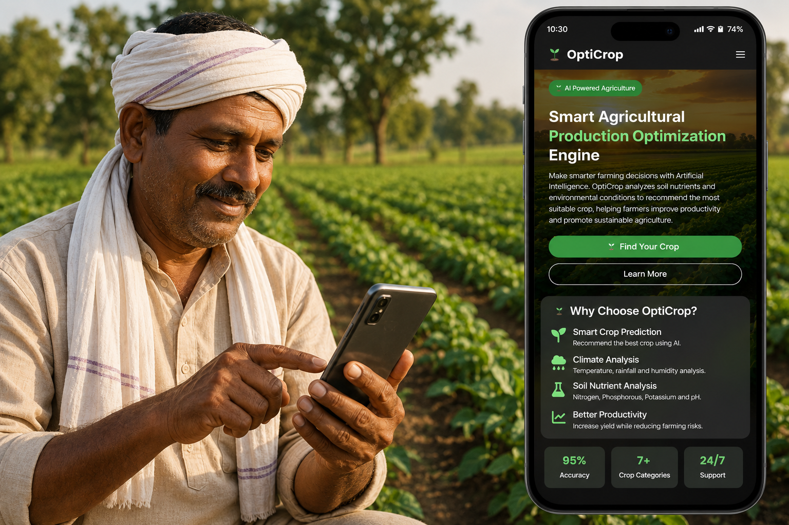

OptiCrop is an AI-powered Smart Agricultural Production Optimization Engine that helps farmers make informed crop selection decisions using soil nutrients, weather conditions, and Machine Learning.
Learn MoreAn intelligent crop recommendation platform built using Artificial Intelligence and Machine Learning.

Agriculture is one of the most important sectors in the world, but selecting the right crop remains a challenge for many farmers. Wrong crop selection can lead to poor yields and financial loss.
OptiCrop analyzes essential soil nutrients such as Nitrogen, Phosphorous, Potassium, pH level, along with environmental factors including rainfall, humidity and temperature to recommend the most suitable crop.
By using Machine Learning, the platform enables data-driven farming practices that improve productivity, reduce risks and promote sustainable agriculture.
Driving innovation in agriculture through Artificial Intelligence and sustainable farming practices.
To empower farmers with intelligent crop recommendations using Machine Learning, helping them increase productivity, reduce farming risks, and make data-driven agricultural decisions.
To build a smarter agricultural ecosystem where Artificial Intelligence supports sustainable farming, improves food production, and enhances the lives of farmers worldwide.
OptiCrop combines modern web technologies and Artificial Intelligence to deliver an efficient crop recommendation system.
Provides the semantic structure for the website.
Creates responsive layouts and beautiful user interfaces.
Makes the website responsive across all devices.
Adds interactivity and dynamic behavior to the website.
Powers the backend and integrates the AI model.
Predicts the most suitable crop based on agricultural data.
Discover how OptiCrop helps farmers improve productivity, reduce risks, and make smarter agricultural decisions.
AI-powered crop recommendations based on multiple agricultural parameters.
Evaluates soil nutrients and pH levels for better crop selection.
Considers rainfall, humidity, and temperature before recommending crops.
Helps farmers increase yield while minimizing risks and resource wastage.